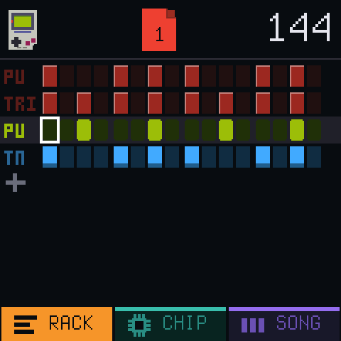
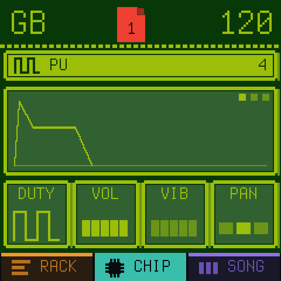
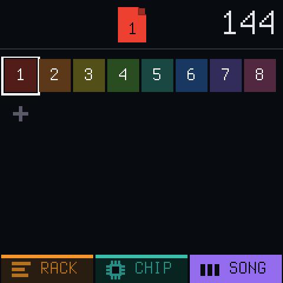
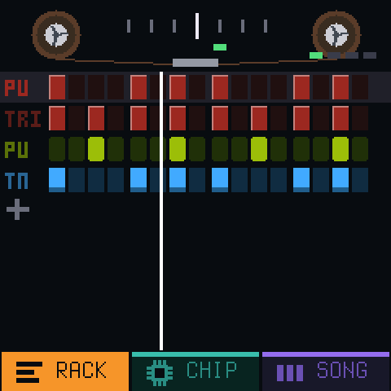
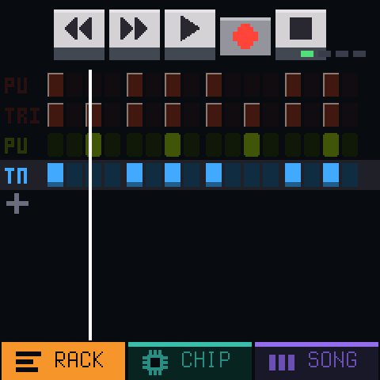
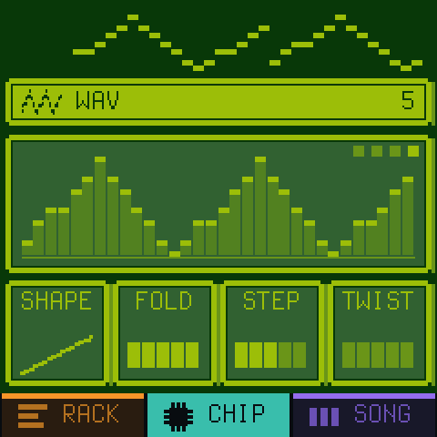

Chipbox
Chiptune on the FM-1. Build songs from NES, Game Boy, Master System and heaps more consoles' sound chips.






The three brothers
They get along: over Bluetooth one of them leads and the others follow. Tempo, kicks, patterns and effects. Here's how.
Consoles
What is it
A simple (to me) workflow for making music. Theres 3 main views you'll spend all your time in:
- RACK - this is the current page (16 steps). Use this to add channels
- CHIP - this is where you shape each channel's sound.
- SONG - this is where you stitch together the pages into a song
Example workflow
- Start on the RACK view. Hit the plus to add a channel.
- Hit HOME to go to the CHIPs, rotate presets knob to get to the channel you added.
- Rotate Algorithm to flip between the configs. Go to the last config page and change the shape.
- Hit HOME, and then add some notes. Use select to go to the exact note, and enter it with the keyboard. Hit play to hear how it sounds as you build it up.
- Hit HOME until SONG is visible. Hit OCT+ to add another page. Select the page, and hit EDIT to open it in the rack, and config it again.
Kind of repeat that a few times until you have something that sounds rad!
wanna make a new song? hold HOME, select an empty project, and hit OCT+. Wanna go back to the other project? hold HOME, and select the previous, then hit OCT+.
want help on any page? hit GLO! stands for 'Get Lots Of help' i guess? i dunno whatever hahaha.
Install
Tested?
- You bet! Tested on a few real FM-1's!
| Console | Channels | Documentation |
|---|---|---|
| NES | Pulse, Triangle, Drums | APU, APU mixer (NESdev wiki) |
| Game Boy | Pulse, Wave, Drums | Audio (Pan Docs) |
| Master System | Tone, Drums | SN76489 (SMS Power!) |
| PC Engine | Wave, Drums | PC Engine (Furnace manual) |
| Atari 2600 | Sound, Drums | TIA hardware notes (Andrew Towers) |
| Konami VRC6 | Pulse, Saw, Drums | VRC6 audio (NESdev wiki) |
| AY-3-8910 | Tone, Drums | AY-3-8910 (Wikipedia) |
| Mega Drive | FM, Drums | Mega Drive audio (Sonic Retro), YM2612 (Wikipedia) |
| Virtual Boy | Wave, Drums | Virtual Boy (Furnace manual) |
| Atari 8-bit | Sound, Drums | POKEY (Furnace manual), POKEY (Wikipedia) |
| PC Speaker | Beeper, Drums | PC speaker (Furnace manual), PC speaker (Wikipedia) |
| AdLib | FM, Drums | OPL (Furnace manual) |
| Namco WSG | Wave, Drums | Namco WSG (Furnace manual) |
| Namco 163 | Wave, Drums | Namco 163 audio (NESdev wiki) |
| Sunsoft 5B | Tone, Drums | Sunsoft 5B audio (NESdev wiki) |
| NES MMC5 | Pulse, Drums | MMC5 audio (NESdev wiki) |
| Famicom Disk | Wave, Drums | FDS audio (NESdev wiki) |
| Konami SCC | Wave, Drums | SCC (Furnace manual) |
| MSX Music | FM, Drums | OPLL (Furnace manual) |
| Konami VRC7 | FM, Drums | VRC7 audio (NESdev wiki) |
| Arcade FM | FM, Drums | YM2151 (Furnace manual) |
| Sound Blaster | FM, Drums | OPL (Furnace manual) |
| WonderSwan | Wave, Drums | WonderSwan (Furnace manual) |
| Sam Coupe | Tone, Drums | SAA1099 (Furnace manual) |
| VIC-20 | Tone, Drums | VIC-20 (Furnace manual) |
| Plus/4 | Tone, Drums | TED (Furnace manual) |
| Atari Lynx | Sound, Drums | Lynx (Furnace manual) |
| PC-98 | FM, SSG, Drums | YM2608 (Furnace manual) |
| Neo Geo | FM, SSG, Drums | YM2610 (Furnace manual) |
| Neo Geo Pocket | Tone, Drums | T6W28 (Furnace manual) |
| MSX-Audio | FM, Drums | Y8950 (Wikipedia), OPL (Furnace manual) |
| Yamaha TX81Z | FM, Drums | OPZ (Furnace manual) |
| SN76477 | Sound, Drums | SN76477 (Wikipedia) |
| Namco System 1 | Wave, Drums | Namco (Furnace manual) |
| Korg Poly-800 | Organ, Drums | MSM5232 (Furnace manual), Korg Poly-800 (Wikipedia) |
| ZX Spectrum | Beeper, Drums | ZX Spectrum (Wikipedia) |
| NEC PC-88 | FM, SSG, Drums | YM2203 (Furnace manual) |
| Commodore 64 | Voice, Drums | SID (C64-Wiki), reSID (Dag Lem) |